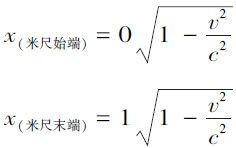
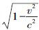
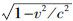
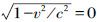
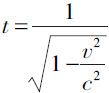
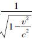

我沿着K′ 的x′ 轴放置一根米尺，令其一端(始端)与点x′ =0重合，另一端(末端)与点x′ =1重合。问米尺相对于参考系K 的长度为何?要知道这个长度，我们只须求出在参考系K 的某一特定时刻t 、米尺的始端和末端相对于K 的位置。借助于洛伦兹变换第一方程，该两点在时刻t =0的值可表示为

两点间的距离为

。但米尺相对于K 以速度v 运动。因此，沿着其本身长度的方向以速度v 运动的刚性米尺的长度为
米。因此刚尺在运动时比在静止时短，而且运动得越快刚尺就越短。当速度v=c ，我们就有
，对于较此更大的速度，平方根就变为虚值。由此我们得出结论： 在相对论中，速度c 具有极限速度的意义，任何实在的物体既不能达到也不能超出这个速度。当然，速度c 作为极限速度的这个特性也可以从洛伦兹变换方程中清楚地看到，因为如果我们选取比c 大的v 值，这些方程就没有意义。
反之，如果我们所考察的是相对于K 静止在x 轴上的一根米尺，我们就应该发现，当从K′ 去判断时，米尺的长度是 ，这与相对性原理完全相合，而相对性原理是我们进行考察的基础。
从先验的观点来看，显然我们一定能够从变换方程中对量杆和钟的物理行为有所了解，因为x,y,z,t 诸量不多也不少正是借助于量杆和钟所能获得的测量结果。如果我们根据伽利略变换进行考察，我们就不会得出量杆因运动而收缩的结果。
我们现在考虑永久放在K′ 的原点(x′ =0)上的一个按秒报时的钟。t′ =0和t′ =1对应于该钟接连两声滴答。对于这两次滴答，洛伦兹变换的第一和第四方程给出：
t =0
和

从K 去判断，该钟以速度v 运动；从这个参考物体去判断，该钟两次滴嗒之间所经过的时间不是1秒，而是

秒，亦即比1秒钟长一些。该钟因运动而比静止时走得慢了。速度c 在这里也具有一种不可达到的极限速度的意义。